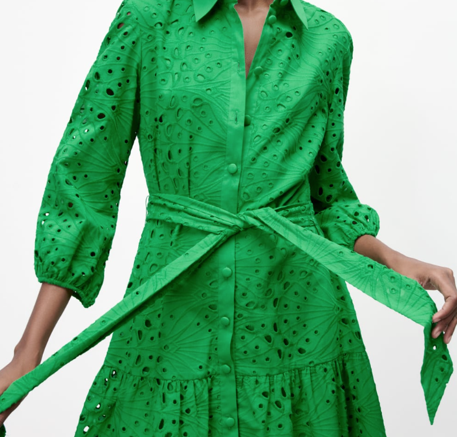

Zara estrena nuevo precio con este vestidazo corto de vuelo bordado verde y aún así nos enamoramos
Tenemos ganas de que sea primavera de verdad, que por un día no tengamos miedo de salir a la calle y que de repente el cielo se ponga negro y empiece a jarrear. La verdad es que lo de que 'en abril, aguas mil', lo están llevando a rajatabla los señores que se encargan del tiempo.
Pero hay que ser positivos, vamos a disfrutar en nada de un mayo impresionante. Eso es lo que nos apetece de corazón, vivir en una eterna primavera que estrenemos de verdad de la buena con este vestido corto verde de Zara que nos ha enamorado a primera vista.
Lo primero es que el color es de otro mundo, las ganas de apartar los grises y los marrones y los colores que nos alejen del sol y el color vivo son inmensas. Y creemos que hemos dado con el tono de verde adecuado. Es un verde luminoso, de esos que hace unos años llamábamos vitamina que vuelve pisando muy fuerte.
El vestido es troquelado, con mangas largas ligeramente abullonadas y un lazo que se ata a la cintura y es precioso porque estiliza todavía más. Además, la falda tiene vuelo, es camisero, un color sólido que huele a todo lo bueno que queda por llegar. No sabemos si a ti te seduce igual que a nosotros, pero desde luego que toda la redacción de NEWLOOK se ha obsesionado con él desde que lo ha visto en su web. Estás de suerte, además, porque esta pieza de lo más original y especial está en la tienda por un precio de 45 euros y en casi todas las tallas. Eso sí, corre porque vuela.